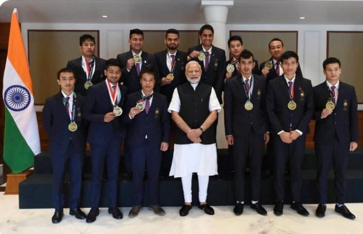
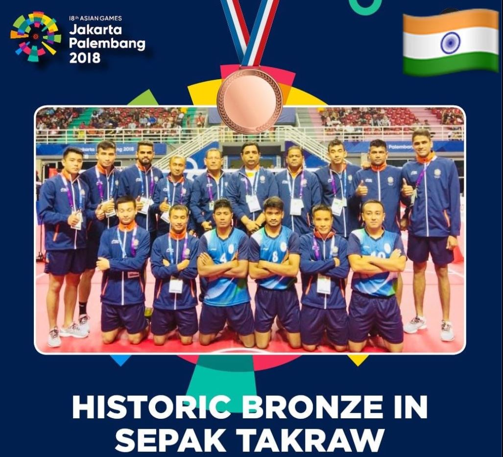
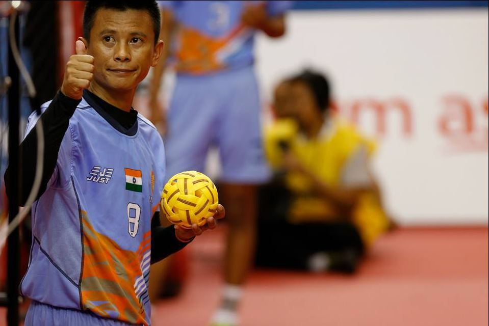
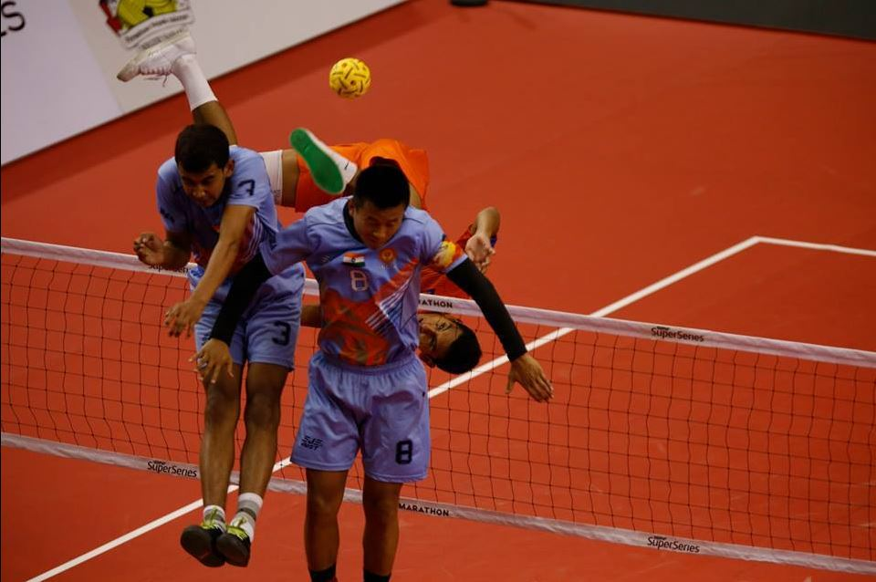
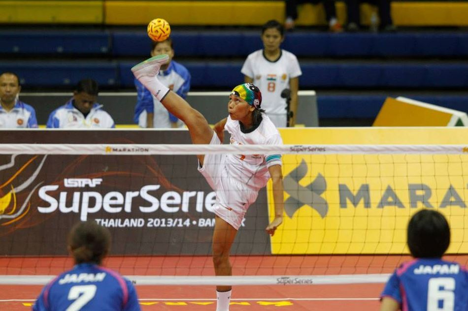

GALLERY
1 / 17

INDIAN MEN'S SEPAKTAKRAW TEAM WITH HN. PRIME MINISTER
2 / 17

3 / 17

4 / 17

4TH BEACH ASIAN GAMES PHUKET 2014
5 / 17

INTERNATIONAUX DE FRANCE WORLD CUP MEN 2017
6 / 17

INTERNATIONAUX DE FRANCE WORLD CUP WOMEN 2017
7/ 17

INTERNATIONAUX DE FRANCE WORLD CUP 2015
8 / 17

9 / 17

ISTAF WORLD CUP QUAD EVENT 2018
10 / 17

WORLD CUP REGU EVENT HYDERABAD 2017
11 / 17

ISTAF SUPER SERIES 2013 NEW DELHI
12 / 17

13 / 17

ASIAN GAMES 2010
14 / 17

28THH KINKS CUP 2013 UDONTHANI
15 / 17

4TH BEACH ASIAN GAMES PHUKET
16 / 17

3RD SOUTH ASIAN SEPAKTAKRAW CHAMPIONSHIP
17 / 17

2ND SOUTH ASIAN CUP COLUMBO
Election 2020
FORM -15 : DECLARATION OF RESULT OF STFI ELECTIONS 2020-24 29-11-2020FORM -6 : LIST OF CONTESTING CANDIDATES DATED 18-11-2020 18-11-2020
LIST OF VALID NOMINATED CANDIDATES 16-11-2020
List of Nominated Candidates Form 3 13-11-2020
APOINTMENT OF RO AND VOTER LIST 02-11-2020 02-11-2020
NOMINATION FORM : EXECUTIVE BODY MEMBER POST 05-11-2020
NOMINATION FORM : TREASURER POST 05-11-2020
NOMINATION FORM : JOINT SECRETARY POST 05-11-2020
NOMINATION FORM : VICE PRESIDENT POST 05-11-2020
NOMINATION FORM : SECRETARY GENERAL POST 05-11-2020
NOMINATION FORM : DEPUTY PRESIDENT POST 05-11-2020
NOMINATION FORM : PRESIDENT POST 05-11-2020
SCHEDULE OF STFI ELECTION 2020 05-11-2020
ELECTION NOTICE 05-11-2020